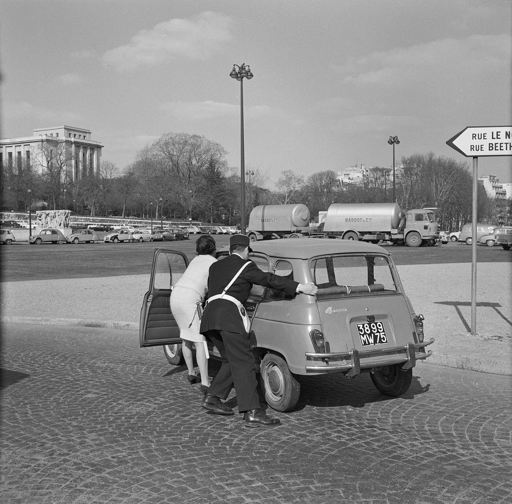

Франция: подозреваемый в стрельбе в Трапе признал, что выбирал жертв по религии и расе
В результате вооружённого нападения 23 октября 2026 года в Трапе и Ла-Верьере под Парижем один человек погиб и семеро получили ранения. По данным антитеррористической прокуратуры, 39-летний подозреваемый признался, что намеренно выбирал людей, которые выглядели как мусульмане или выходцы из Африки.

В пятницу, 23 октября 2026 года, в городах Трап и Ла-Верьер (департамент Ивелин) под Парижем произошло вооружённое нападение. Нападавший открыл огонь по людям из движущегося автомобиля, убив одного человека и ранив семерых. На пресс-конференции 29 октября Национальная антитеррористическая прокуратура (PNAT) сообщила, что подозреваемый признался в том, что намеренно выбирал жертв по их религии и расе.
Что произошло
По данным следствия, 39-летний подозреваемый (названный как Кевин Т.) стрелял очередями из движущейся машины из пистолета-пулемёта типа «Стэн» времён Второй мировой войны. Стрельба произошла в Трапе и соседнем городе Ла-Верьер.
Жертвы
Единственной погибшей жертвой стал 26-летний Пенго Боссио Ванги, гражданин Франции конголезского происхождения (ДР Конго). Число раненых сначала оценивалось в пять человек, позже было уточнено до семи, среди них 11-летняя девочка. По словам прокурора, трое раненых были госпитализированы, один — в тяжёлом состоянии.

В чём признался подозреваемый
По словам прокурора PNAT Оливье Кристена, подозреваемый признался, что намеренно выбирал людей, которые выглядели как мусульмане, африканцы или выходцы из Северной Африки. Он заявил, что выбрал Трап, поскольку считал его «убежищем исламистов». При этом подозреваемый отрицал намерение совершить теракт, назвал свои действия «законными» и сказал, что не раскаивается.
Заранее спланированное нападение
Прокурор подчеркнул «очень тщательную подготовку» нападения. Подозреваемый признал предумышленность и сказал, что стрелял «очередями». С сентября он приобрёл несколько деталей для повышения эффективности оружия, а также полицейскую повязку и наручники. При обыске в его доме нашли глушитель, штык-нож, кастет и заказанные им самим наклейки с националистическими лозунгами.
Расследование
Национальная антитеррористическая прокуратура возбудила дело об убийстве и покушении на убийство при отягчающих обстоятельствах террористического характера. Насилие в отношении мусульман и мигрантов во Франции в последние годы становится предметом широкой общественной дискуссии.